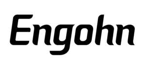

Trade Mark Journal No.2025/032 8 August 2025
UK00004240144 28 July 2025 (3,21,25,35)

- Class 3
- Cosmetics; Dentifrice; Cleaning preparations; Ethereal oils; Cotton sticks for cosmetic purposes; Wipes impregnated with a skin cleanser; Nail art stickers; Washing preparations; Tooth cleaning preparations; Liquid soaps for laundry; Toilet soap; Shave creams; Cosmetic bath salts; Hair colouring and dyes; Fruit and vegetable wash; Hair styling preparations; Deodorants for human beings or for animals; Nail care preparations; Cosmetics for animals; Depilatories.
- Class 21
- Kitchen utensils; Inflatable bath tubs for babies; Containers for household use; Crockery; Beverageware; Feeding vessels for pets; toothbrushes; Make-up sponges; tableware,other than knives,forks and spoons; Plug-in diffusers for mosquito repellents; Bread baskets, domestic; Toothbrushes for pets; Washing brushes; Baking mats; Exfoliating mitts; toothbrushes, electric; Brushes for pets; cloths for cleaning; Cages for pets; Combs.
- Class 25
- Ready-made clothing; masquerade costumes; Athletic tights; Rain coats; Shoes; Hats; Socks; Gloves as clothing; Neckties; Waistbands; Underclothing; Surf wear; Leg warmers; Mufflers as neck scarves; Headwear; Bibs, not of paper; Clothing layettes; Disposable underwear; Headbands against sweating; Wraps [clothing].
- Class 35
- Advertising and advertisement services; Advertising planning; Business management consulting; Provision of business information via global computer networks; Assistance in franchised commercial business management; Marketing; Marketing the goods and services of others; Provision of an on-line marketplace for buyers and sellers of goods and services; Web site traffic optimisation; Sponsorship search; Outsourcing services [business assistance]; Import and export agencies; Personnel management consultation; Rental of office machinery and equipment; Account auditing; Accountancy; Retail services in relation to pet products; Inventorying merchandise; On-line ordering services in the field of restaurant take-out and delivery; Supply chain management services.
GUANCHEN LI
Representative: yayipcom